Masteri Grand Avenue (Cổ Loa, Đông Anh): thông tin dự án và 38 mặt bằng căn hộ hai tòa S1, S2
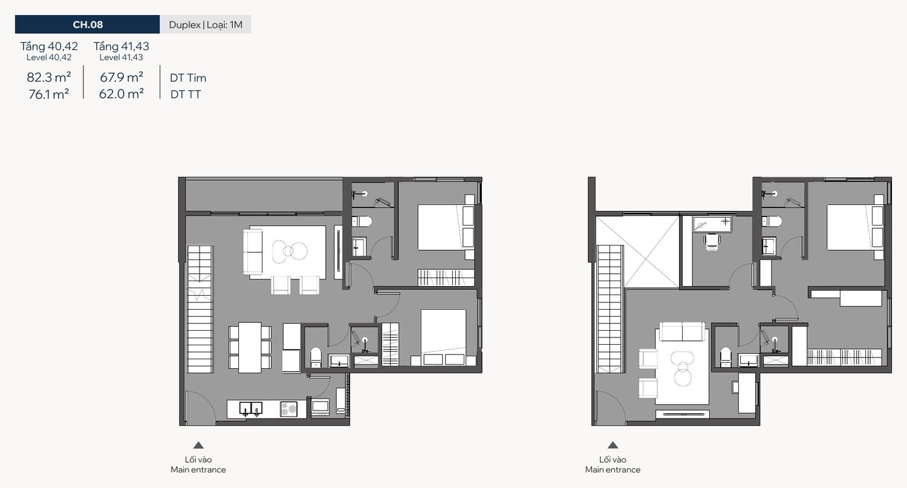
1. Tóm tắt nhanh
Vinhomes Global Gate
đã thu thập
khác nhau rõ rệt
Masteri Grand Avenue là dự án căn hộ của Masterise Homes tại khu Vinhomes Global Gate (Cổ Loa, Đông Anh). Giai đoạn đầu mở bán tòa S2 với đủ loại từ studio đến 3 phòng ngủ. Bài tổng hợp 38 mặt bằng hai tòa S1 và S2.
| Hạng mục | Thông tin |
|---|---|
| Tên dự án | Masteri Grand Avenue (Cổ Loa) |
| Chủ đầu tư | Masterise Homes |
| Địa chỉ | Khu Vinhomes Global Gate, Cổ Loa, Đông Anh, Hà Nội |
| Tiến độ | Khởi công quý IV/2024; bàn giao dự kiến quý III/2027 |
| Giá tham khảo | Giá chủ đầu tư trung bình 90–120 triệu/m²; tin rao thứ cấp 100–125 triệu/m² |
| Giá bán chính thức | Chưa có bảng giá chính thức trong bài; xem mục 5 |
2. Vị trí
Dự án nằm tại Vinhomes Global Gate, Cổ Loa, Đông Anh. Bài chỉ nêu thông tin công bố, không đánh giá vị trí.
3. Sản phẩm
Bảng dưới đây liệt kê toàn bộ mặt bằng đã thu thập; những mẫu có diện tích gần như trùng nhau được ghi chú “cùng mặt bằng”, và phần hình chỉ đặt các mặt bằng khác nhau. Diện tích có thể khác nhau tùy nguồn (tim tường hay thông thủy); cột trống nghĩa là tài liệu không công bố.
| Loại / mã | Số PN | Tim tường (m²) | Thông thủy (m²) | Ghi chú |
|---|---|---|---|---|
| CH.07 | 0 | 30,8 | 27,3 | |
| CH.11 | 1 | 50,0 | 45,9 | |
| CH.13 | 1 | 52,8 | 48,9 | |
| CH.14 | 1 | 38,5 | 34,2 | |
| CH.21 | 1 | 46,5 | 42,3 | |
| CH.16 | 1 | 50,5 | 46,6 | Cùng mặt bằng với CH.11 |
| CH.22 | 1 | 53,4 | 49,4 | Cùng mặt bằng với CH.13 |
| CH.23 | 1 | 52,0 | 47,8 | Cùng mặt bằng với CH.13 |
| CH.03 | 1 | 57,2 | 52,5 | |
| CH.20 | 1 | 61,3 | 56,2 | |
| CH.04 | 2 | 65,1 | 60,0 | |
| CH.05 | 2 | 62,6 | 57,5 | |
| CH.02 | 2 | 65,1 | 60,4 | Cùng mặt bằng với CH.04 |
| CH.12 | 2 | 66,7 | 62,1 | |
| CH.18 | 2 | 68,4 | 62,6 | |
| CH.19 | 2 | 64,2 | 58,8 | |
| CH.08 | 3 | 82,0 | 75,0 | |
| CH.02 | 3 | 118,1 | 109,3 | |
| CH.08 | 3 | 150,2 | 138,1 | |
| CH.04 | 0 | 30,8 | 27,3 | Cùng mặt bằng với CH.07 |
| CH.01 | 1 | 52,8 | 48,9 | Cùng mặt bằng với CH.13 |
| CH.02 | 1 | 50,0 | 45,9 | Cùng mặt bằng với CH.11 |
| CH.16 | 1 | 46,5 | 42,3 | Cùng mặt bằng với CH.21 |
| CH.23 | 1 | 38,5 | 34,2 | Cùng mặt bằng với CH.14 |
| CH.14 | 1 | 52,0 | 47,8 | Cùng mặt bằng với CH.23 |
| CH.15 | 1 | 53,4 | 49,4 | Cùng mặt bằng với CH.22 |
| CH.20 | 1 | 50,5 | 46,6 | Cùng mặt bằng với CH.11 |
| CH.11 | 1 | 57,2 | 52,5 | Cùng mặt bằng với CH.03 |
| CH.17 | 1 | 61,3 | 56,2 | Cùng mặt bằng với CH.20 |
| CH.08 | 2 | 62,6 | 57,5 | Cùng mặt bằng với CH.05 |
| CH.10 | 2 | 65,1 | 60,0 | Cùng mặt bằng với CH.04 |
| CH.12 | 2 | 65,1 | 60,4 | Cùng mặt bằng với CH.04 |
| CH.13 | 2 | 66,7 | 62,1 | Cùng mặt bằng với CH.12 |
| CH.18 | 2 | 64,2 | 58,8 | Cùng mặt bằng với CH.19 |
| CH.19 | 2 | 68,4 | 62,6 | Cùng mặt bằng với CH.18 |
| CH.05 | 3 | 82,0 | 75,0 | Cùng mặt bằng với CH.08 |
| CH.05 | 3 | 150,2 | 138,1 | Cùng mặt bằng với CH.08 |
| CH.12 | 3 | 118,1 | 109,3 | Cùng mặt bằng với CH.02 |
Studio
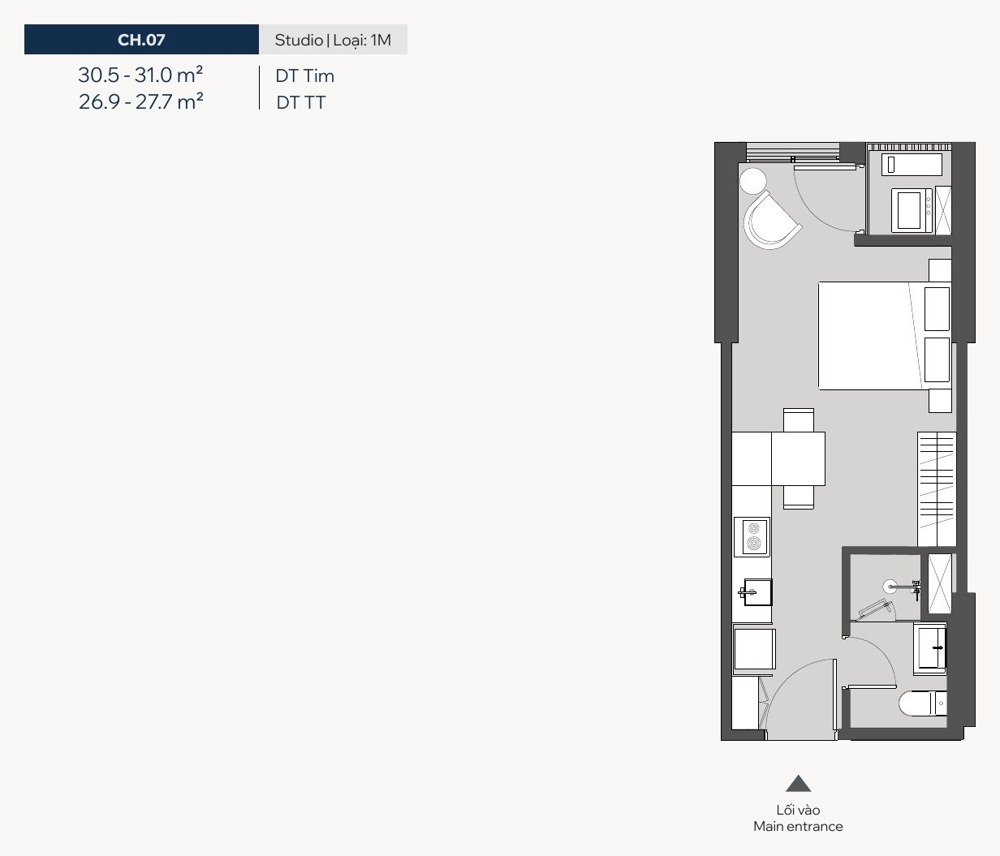
Căn hộ 1 phòng ngủ
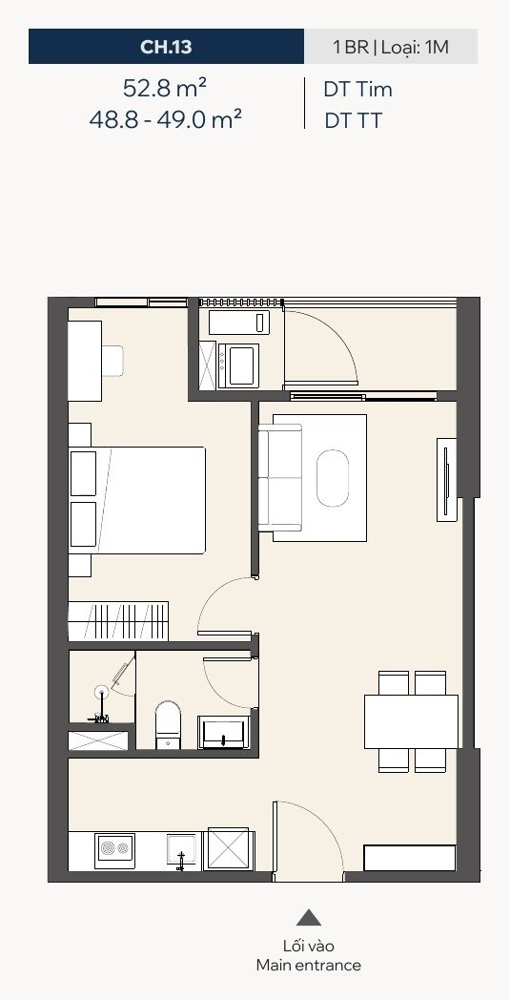
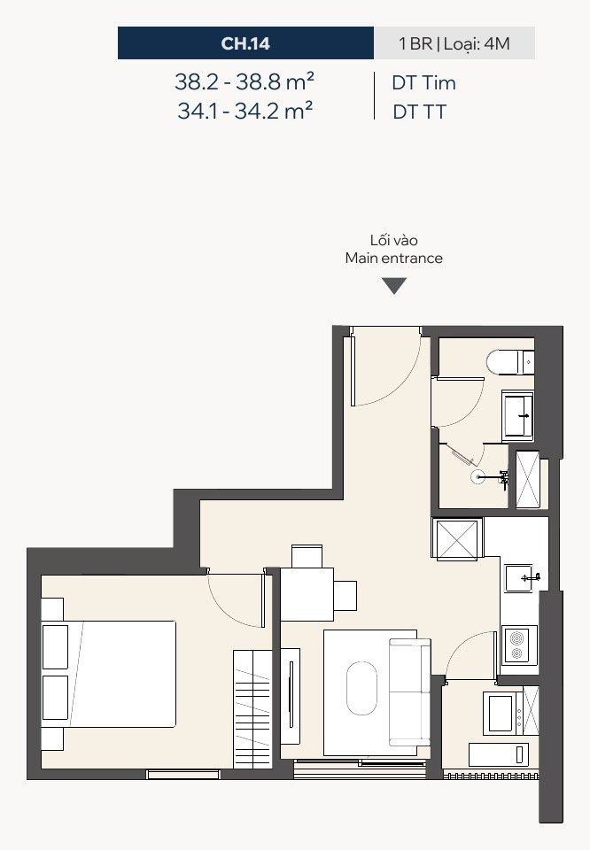
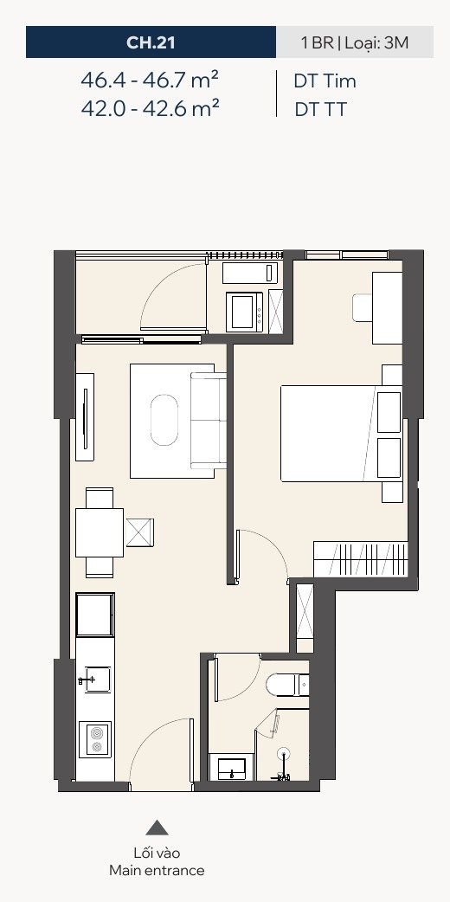
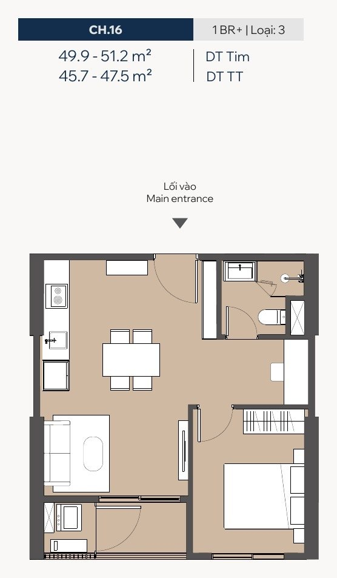

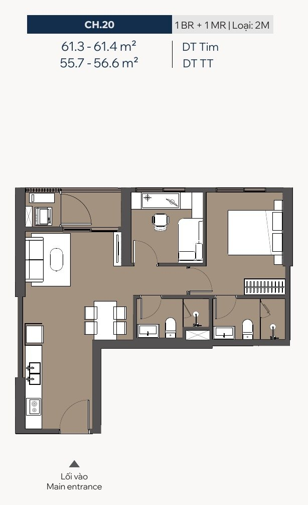
Căn hộ 2 phòng ngủ
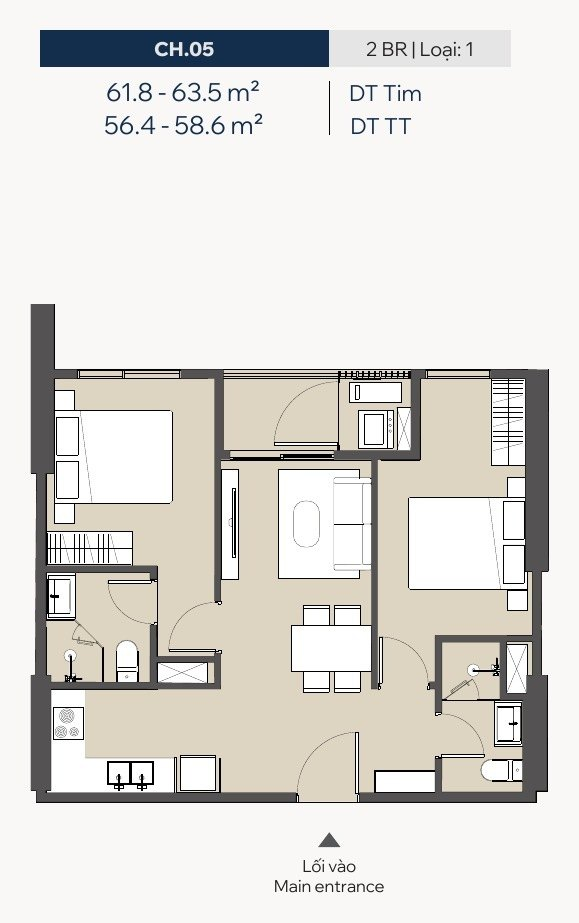
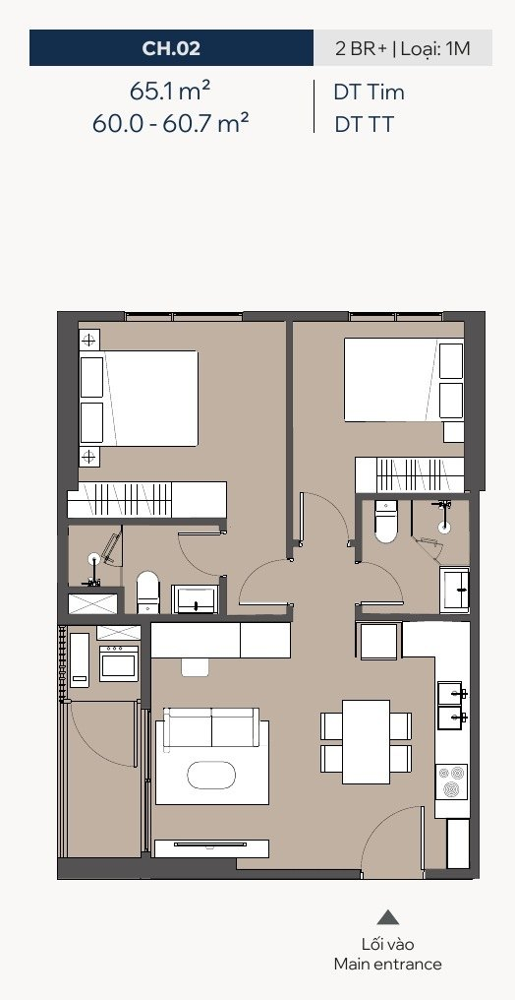
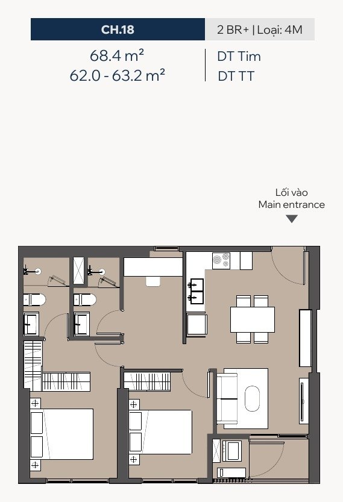
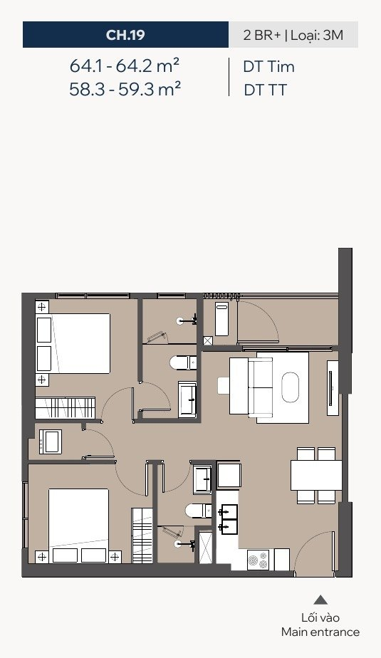

Căn hộ 3 phòng ngủ
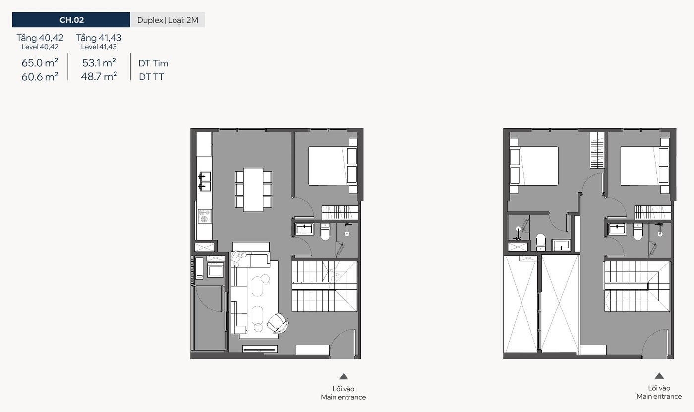

4. Tiện ích và thiết kế
Thông tin tiện ích chi tiết xem trang chính thức của dự án; bài này tập trung vào mặt bằng căn hộ.
5. Giá tham khảo (gần đúng)
| Nguồn / loại căn | Mức giá | Ghi chú |
|---|---|---|
| Giá trung bình của Masterise Homes | 90–120 triệu/m² | Theo báo Lao Động |
| Một bài khác | từ 93 triệu/m² | |
| Tin rao thứ cấp | 100–117 triệu/m² | Căn 1PN 49 m² có tin 124 triệu/m² |
Giá chủ đầu tư được nhắc đến 90–120 triệu/m², giá rao thứ cấp 100–125 triệu/m².
6. Tiến độ và nguồn cung
- Chưa có thông tin chính thức trong bài: số căn từng mẫu, bảng giá hiện hành và tiến độ chi tiết; hãy hỏi chủ đầu tư.
7. Kết luận
Bài tổng hợp các mặt bằng đã công bố của Masteri Grand Avenue (Cổ Loa) để dễ đối chiếu. Khi cân nhắc một căn cụ thể, hãy xác nhận mã căn, diện tích tim tường và thông thủy và giá hiện hành với chủ đầu tư.